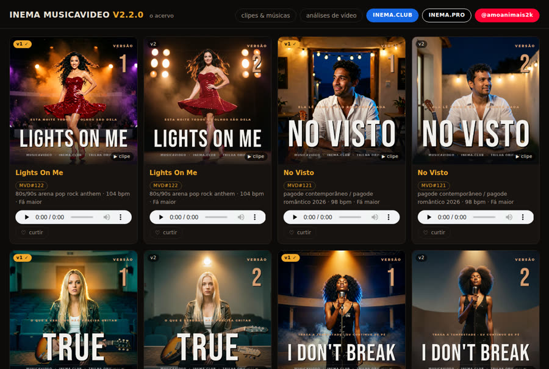
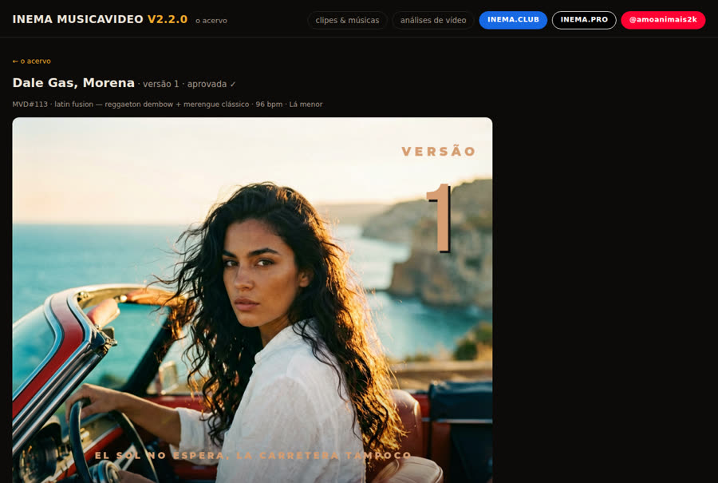

The videos, tracks, and covers live in a public Hugging Face dataset, and the browser fetches them directly from there. This app loads only the text, which makes it lightweight and inexpensive, and keeps it running even if the media goes down.
Video is the most expensive file to serve and the hardest to host. Here, it never passes through this app: only text travels during deployment, while the heavy files stay where they’re already served for free with range requests.
Videos, tracks, and covers come from the public dataset Inematds/musicavideo-acervo. O resolve/main from Hugging Face responds range request — the video bar navigates without any proxy, and the app pays nothing for bandwidth or storage.
Titles, lyrics, prompts, and the shot breakdown come from a manifest.json versioned in the repo itself. The page renders without a network trip — if Hugging Face goes down, it still shows the entire collection as text.
Suno delivers two tracks per request, and each one is a different song: same lyrics, another interpretation. Each track has its own card, address, and page, with the video opening at the top.
This app is the final stop on a path that starts in the local musicavideo dashboard—the workbench where you listen, compare, and send things to the trash. Uploading isn’t what happens when something is finished: finished production is work material; a showcase is a choice.
The app runs without any keys — the collection is public and the manifest is in the repo. Only likes need infrastructure, and without it, the showcase still works as a showcase.
Next.js 16, no database and no service dependencies for rendering. The manifest is imported as a module.
npm install npm run dev # http://localhost:3000
Public dataset, written by the musicavideo publica-hf. Switching datasets is a variable.
# optional — this is already the default HF_REPO=Inematds/musicavideo-acervo
It's the only writing from the audience, which is why the app isn't pure static HTML. The app keeps running without these variables: the counter disappears and the click isn't persisted.
KV_REST_API_URL
KV_REST_API_TOKEN
# in Vercel: Storage → Upstash RedisCommands with musicavideo run in the pipeline repo (inematds/musicavideo); those for npm, here.
One click on the card marks the production in the estado.json. Unchecking doesn't delete what was already uploaded — it creates a removal task, executed on the next publication.
musicavideo painel # the workbench, on :5400 musicavideo nuvem MVD#113 # or the button on the card
Uploads to Hugging Face only what changed, write the manifest.json in this repo and commits it. Running it twice in a row doesn't reread anything.
musicavideo publica-hf --dry # what would be uploaded, without uploading it musicavideo publica-hf # upload, write the manifest, commit, and push musicavideo publica-hf --manifesto # metadata only, without resending media
The manifest is imported as a module, so the app works offline for all text—the media is what needs a network connection.
npm install npm run dev # :3000 npm run build # make sure all pages build
Each production has a number — the same one as the bot that generated it — and each track has its own page. The old route by production still responds and redirects to the approved version.
/mvd-113-v1 # track 1 of that production /mvd-113-v2 # track 2 — same lyrics, different interpretation /mvd-113 # old route: redirects to the approved version /analises # what analisevideo measured from real videos
In Vercel: Storage → Create Database → Upstash Redis, connect it to the project, and redeploy — the variables are injected automatically. The token must be the one for writing; read-only access won't work.
# the counter is an atomic INCR per track: MVD#113:1 curl "$URL/api/like?mvd=mvd-113:1"
It's the only audience signal the project has. Without that feedback, it would die here.
MUSICAVIDEO_PUB_URL=https://sua-vitrine.vercel.app \ musicavideo likes # turns into ♥ on each card in the local dashboard
Import this repo into Vercel with Root Directory ./. From then on, the webhook handles the rest — there's no manual deploy step.
git push # deploy happens through the git → Vercel webhook
Screenshots of the live app, with today's collection: 27 productions and 53 songs.


V1 (the local dashboard) and V2 (this showcase) are two apps, not a migration: turning this one off doesn't turn the other off.
MVD#113), and the video analytics tab.publica-hf uploads only what changed and ends at git push from the manifest — no uploading gigabytes only for the showcase to keep displaying the previous version.musicavideo likes runs manually. A like comes in when the audience clicks, not when it's approved — it's the only part of the cycle without a natural human action to trigger it.